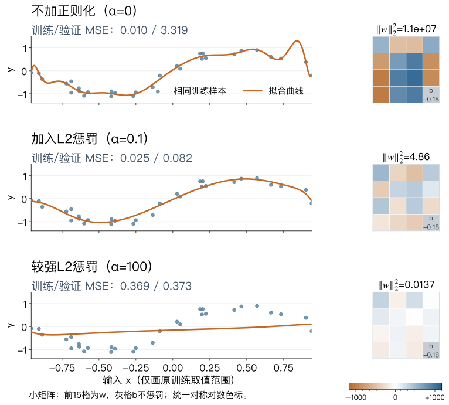
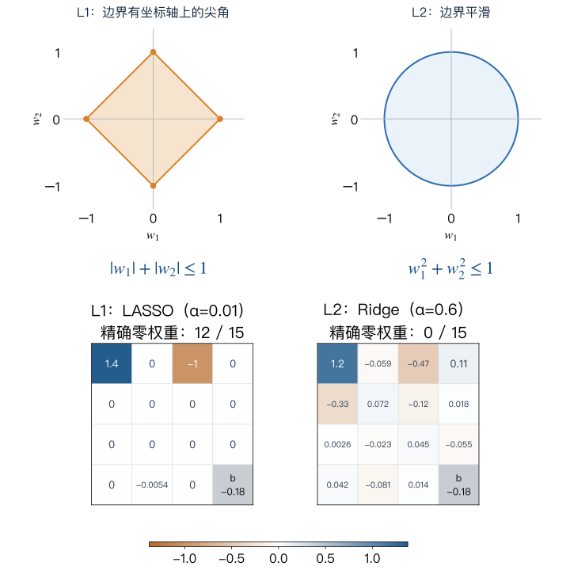

第 6 讲 · 模型选择：泛化、诊断与调参
如何选出泛化更好的模型？
第5讲，我们比较了模型的分类、排序与概率表现。现在固定评价指标，继续问：怎样改进模型，才能让新样本上的表现更好？
泛化（generalization）：模型对未参与训练的新样本的预测能力。
图中，训练时见过1、4和普通写法的7。新卡片是带横杠的7，写法不同，类别没变。模型还能把它认成7吗？
本讲先比较训练与验证成绩，再诊断和改进模型，最后检验选择是否可靠。

第 6 讲 · 模型选择：泛化、诊断与调参
第5讲，我们比较了模型的分类、排序与概率表现。现在固定评价指标，继续问：怎样改进模型，才能让新样本上的表现更好？
泛化（generalization）：模型对未参与训练的新样本的预测能力。
图中，训练时见过1、4和普通写法的7。新卡片是带横杠的7，写法不同，类别没变。模型还能把它认成7吗？
本讲先比较训练与验证成绩，再诊断和改进模型，最后检验选择是否可靠。
第 6 讲 · 模型选择：泛化、诊断与调参
模型训练完以后，要用来预测什么？如果只是复现已有样本，训练成绩可以反映这一点；但实际任务通常要预测未见过的客户、图片或记录，这就要求模型具备泛化能力。

D是训练数据，fD是从D学到的模型；n为样本数，ℓ为单样本损失。
P表示未来样本的目标分布，E表示对该分布取期望。
训练平均损失称为经验风险（empirical risk）；目标分布上的期望损失称为泛化风险（generalization risk）。
如何评估泛化能力？用能代表未来、且未参与训练的样本计算平均损失，估计泛化风险。因此，要预先划分数据，将用于学习的数据与用于评价的数据分开。
💭 如果测试图片全来自旧设备，部署却换了新设备，测试误差还能直接代表部署表现吗？
未必。采集条件变了，测试样本可能不再代表部署分布。
第 6 讲 · 模型选择：泛化、诊断与调参
即使模型设置不变，换一次训练／验证分配，分数也可能变化。只看一次划分，难以判断结果对这次分配有多敏感。
交叉验证（cross-validation, CV）在开发数据内部轮换训练与验证，汇总多轮成绩来评价训练流程。K折交叉验证（K-fold cross-validation）将开发数据分为K折，每次用其中1折验证，其余K−1折训练。右图为五折交叉验证（5-fold cross-validation，K=5）：每次4折训练、1折验证，共拟合5次不同模型；最终测试集不参与。
留一交叉验证（Leave-One-Out, LOO）是每折只留1个样本验证：n个样本共拟合n次，每次用n−1个训练。训练数据用得更多，但计算开销大，评价未必更稳定。
💭 为什么通常在开发集内部做交叉验证，而不从测试集中再划出验证集？
开发集内做CV，可让样本轮流参与训练与验证，同时保留足够的独立测试数据。从尚未使用的测试集预先划出验证集也可以，但划出的部分就属于开发数据，剩余测试样本会减少。
选定配置后，通常在全部开发数据上重训。

LeavePOut。第 6 讲 · 模型选择：泛化、诊断与调参
固定标准化＋Logistic回归流程与模型设置，把1437条开发数据分成5组。右图每一行都重新拟合：蓝色4组训练，橙色1组验证。
每轮只在橙色那组计算准确率，得到右侧的一个点。这五个数都是验证分数，不是训练成绩，也不是同一个模型反复评分。
均值96.80%概括五次结果的平均水平；折间标准差0.74个百分点描述五个分数有多分散，数值越大，轮次间波动越大。
👀 最高一折的97.91%，能代表整个流程的表现吗？
不能。最高一折只代表该次训练／验证分配，不能替代五轮汇总，更不能充当最终独立测试成绩。

第 6 讲 · 模型选择：泛化、诊断与调参
比较K-Fold与LOO的取舍；右图仅以5-Fold（K=5）举例：同样1437条开发数据，模型与标准化设置不变。本次LOO多答对6个，但不据此认定它总是更好。
| 比较项 | K-Fold | LOO |
|---|---|---|
| 训练用量 | 约(K−1)/K；5-Fold约80% | n−1条，接近全量 |
| 计算成本 | 每个候选拟合K次 | 通常每个候选拟合n次 |
| 主要取舍 | 折数较少时成本低；训练量偏少可能使评价偏悲观 | 少留出数据，但评价不保证更稳定 |
| 适用场景 | 常规选模、候选多或训练慢 | 样本很少、单次训练便宜 |
常规任务可先用5折或10折。
回顾第3讲p20：10折CV选阶。前面已区分数据用途；接下来分别看预测新对象与预测未来记录时，训练和验证应怎样隔离。
第 6 讲 · 模型选择：泛化、诊断与调参
为什么按用户分组？同一用户的记录往往相似。若分到训练和验证两侧，模型可能只是“认出了老用户”，使验证成绩偏乐观。要检验对新用户的泛化能力，验证用户就不应出现在训练集中。
组（group）表示同一来源的多条记录，例如同一患者。GroupKFold根据每行的组号划分，保证本轮训练与验证的组互不重叠。
group_cv = GroupKFold(n_splits=5)
for train_idx, valid_idx in group_cv.split(
X, y, groups):
train_groups = set(groups[train_idx])
valid_groups = set(groups[valid_idx])
assert train_groups.isdisjoint(valid_groups)💭 组号互斥，能证明它就是真实身份吗？
不能。断言只检查给定组号互斥，身份是否可靠需要回到数据来源核查。
assert仅核对两侧组号互斥。它不能核实原始组号是否正确，也不能保证两侧来自相同分布。

第 6 讲 · 模型选择：泛化、诊断与调参
预测未来租车需求时，评价也应用过去训练、用后续数据验证。右图展示一次按时间留出。
| 方式 | 训练历史怎样使用？ |
|---|---|
| 按时间留出 chronological holdout | 固定一个分界，只评价一次 |
| 扩展窗口 expanding window | 分界后移，保留此前全部历史 |
| 滑动窗口 sliding / rolling window | 分界后移，只保留近期历史 |
💭 如果旧数据里的规律已变化，保留全部历史一定更好吗？
不一定。旧规律可能失效，但减少历史也会损失样本；应在开发数据上比较与部署一致的窗口方案。
UCI单车真实日租赁量，731天。数据与实际日期表

先做一次未来检验：可按时间留出；需要多轮检验：再根据是否保留全部历史，选择扩展或滑动窗口。
历史规律较稳定时，可用扩展窗口积累样本；
更重视近期规律时，可用滑动窗口舍弃旧数据。
下一页看两者怎样前移。
第 6 讲 · 模型选择：泛化、诊断与调参
扩展窗口保留历史，滑动窗口移走旧数据。每轮中，两种方案使用相同的后续60天验证块，只改变训练历史的长度；图中展示第1轮与第3轮。
TimeSeriesSplit(n_splits=3, test_size=60)默认扩展窗口；增加max_train_size=180，本例每轮只用最近180天。test_size是每折评分记录数，不会自动完成60步预测。
💭 滑动窗口第3轮舍弃了哪些历史？怎样判断舍弃是否值得？
舍弃了该折验证起点前、最近180天之外的开发记录。应按部署的更新频率和信息可得性，在相同开发验证日期上比较效果与成本，而非只凭曲线看起来不同。
同一真实曲线、相同坐标；阴影标记窗口，灰线为本轮未使用的记录；不是预测区间。最后120天始终不参与CV。三轮索引与窗口图

第 6 讲 · 模型选择：泛化、诊断与调参
沿用单车数据，假设在每天开始时预测随后7天总租赁量（不含当天），输入只用此前已知信息。
若5月6日开始验证：
| 预测日 | 标签覆盖日期 | 此时是否完整？ |
|---|---|---|
| 4月28日 | 4月29日–5月5日 | 已完整 |
| 4月30日 | 5月1日–5月7日 | 尚未完整 |
因此，先不使用4月29日–5月5日这7条近期记录训练；图中通过间隔（gap）将它们排除。
TimeSeriesSplit(n_splits=3,
test_size=60, gap=7)总结

第 6 讲 · 模型选择：泛化、诊断与调参
前面用划分与CV评价模型的泛化表现。现在进一步问：固定建模流程，训练样本的变化会让预测结果波动多大？
自助法（Bootstrap）从现有n条训练记录中，有放回地抽n条，重新训练模型；重复B次，观察同一输入下的预测波动。
什么时候用：难以反复采集新的训练数据，又想估计模型对训练样本变化的敏感程度时。后续还可汇总这些模型的预测，形成Bagging（自助聚合）。
本例：Iris两类共100条，仅用花瓣长度分类；固定70条训练、30条独立留出。每份重抽70条，重新拟合标准化与Logistic回归，共200次。
名字的由来：bootstrap原指靴子提环，借自“拽着自己的靴带把自己提起来”，比喻依靠现有样本重抽。它并未创造新的独立数据。
💭 200次重训后的预测差异，能全部归因于训练样本变化吗？怎样设计实验才能区分原因？
不一定，算法自身的随机性也可能带来差异。应固定模型设置和预处理流程（每轮重新拟合），若算法含随机性则固定其种子，只改变重抽样训练数据。
第 6 讲 · 模型选择：泛化、诊断与调参
固定花瓣长度为4.8 cm，让200个重训模型分别预测属于Iris virginica（类别1）的概率。右上图的紫色圆点标出前30个模型在该输入处的预测概率。
本次预测均值为43.7%，预测概率的标准差约6.17个百分点：输入和训练规则相同，重抽训练集不同，预测也不同。
Bootstrap标准误差（standard error, SE）用这些重训结果的标准差，估计固定输入下预测概率估计量的抽样波动：

本例θ̂是原训练集模型的预测概率；θ̂*(b)是第b个重训模型的预测概率，横线为B次预测的平均。此处不是准确率，也不是标签本身的随机性或置信区间。
本例说明：即使输入和建模流程固定，训练样本的变化仍会带来预测波动；Bootstrap用重抽样近似评估这种敏感程度，标准误差越大，表示该输入处的预测越不稳定。
第 6 讲 · 模型选择：泛化、诊断与调参
| 本课中的用途 | 怎样训练与比较 |
|---|---|
| CV：评价、选择模型 | 轮换训练与验证，比较验证成绩 |
| Bootstrap：观察训练波动 | 有放回重抽训练集，每份重新拟合 |
| OOB：内部评价 | 每轮用未抽中的原训练记录评价该轮模型 |
某轮重抽没选中的原训练记录称为袋外样本（out-of-bag, OOB），可用于本轮模型的内部评价。右图第1轮有28条袋外记录。最终测试数据仍单独保留。

n是原训练记录数；每次不选中某条记录的概率为1−1/n，连抽n次均未选中得到上式。箭头上的n→∞表示n增大时的极限。36.8%是大样本下的期望比例，并非每轮固定。
通过集成改善泛化：Bagging将重抽训练得到的模型进行投票或概率平均；随机森林在此基础上还引入特征随机性。
💭 袋外记录随每轮改变，为什么不能把它当作永久封存的测试集？
每条记录可能在某轮袋外、另一轮袋内，且OOB结果可能被用于调参；它不是从整个选择过程永久隔离的一批数据。

第 6 讲 · 模型选择：泛化、诊断与调参
类别不平衡时，多数类可能主导模型的学习，使少数类识别不足。类别重采样（Class Resampling）通过改变训练数据中的类别比例，尝试改善这种情况。
| 方法 | 处理方式与限制 |
|---|---|
| 随机过采样 Random Oversampling | 重复不足类别的记录；可能反复记住少数样本 |
| 随机下采样 Random Undersampling | 减少多数类记录；更省计算，但可能丢掉有用信息 |
| SMOTE | 在同类近邻之间插值合成记录，下一页解释 |
采样比例不必是1∶1，它也是超参数。用交叉验证比较不采样、不同方法和比例，根据任务目标选择，不能只看数量是否相等。
⚠️ 把训练集采样到1∶1后，验证集也应该改成1∶1吗？
不应该为提高分数而改变验证分布，评价数据应代表目标使用条件。重采样只作用于当前训练折，最终测试数据仍单独保留。

第 6 讲 · 模型选择：泛化、诊断与调参
合成少数类过采样技术（Synthetic Minority Over-sampling Technique，SMOTE）从目标类别的一条记录xᵢ出发，在其同类k近邻中随机选xⱼ，再在线段上生成新点：

k是候选同类近邻数，xᵢ、xⱼ是特征向量。λ决定插值位置：每生成一个新样本，从[0,1)均匀随机抽取一次，不用寻找“最佳λ”。右图固定λ=0.4，表示从xᵢ向xⱼ走40%，生成点沿用该类标签。
通过交叉验证选择k和采样比例，λ则随机生成。
插值合理性需要检查。先在训练折内缩放特征；类别编码不能直接当连续数值插值。离群点或复杂类别边界可能造成不合理的新样本。
💭 两个同类样本之间的点，为什么不一定仍是合理的同类样本？
同一类可能分布在不同区域，连接线可能穿过另一类或没有真实样本的区域。“同类邻域中的插值仍合理”是一项假设，不是新点标签的独立证据。

第 6 讲 · 模型选择：泛化、诊断与调参
前面用SMOTE在特征之间插值；图像数据增强（Image Data Augmentation）利用图像任务的知识，直接构造仍符合原标签的输入变化。
| 方案 | 训练行数 | 验证准确率 |
|---|---|---|
| 未增强 | 5000 | 93.85% |
| A：左右平移 | 15000 | 94.65% |
| B：旋转±10° | 15000 | 95.70% |
| A+B：平移与旋转 | 25000 | 95.80% |
同一KNN、同一验证集：本次A+B较未增强错误数减少31.7%。组合不保证更好；新增行不是独立新样本。
💭 小幅平移或旋转，为什么可能帮助识别新笔迹？
任务希望对小幅位置和倾斜变化保持识别稳定。变体使近邻库包含同一数字在不同位置或倾角下的外观，查询图有机会找到更相似、同类别的邻居；这是合理性解释，不是对任意变换的保证。
第 6 讲 · 模型选择：泛化、诊断与调参
从纸质表格到识别数据。NIST收集手写样本，用于光学字符识别（Optical Character Recognition，OCR）研究，让机器读取数字和文字，比较不同识别系统。
谁写的，怎样收集？普查局工作人员和高中生按要求填写专门的样本表。研究人员以约300 dpi扫描，再切分字符并核查标签。
两群人的字，识别难度不同。MNIST作者发现，工作人员的数字较容易识别，高中生的较难。用一群人的字训练、另一群人的字测试，还会引入书写风格的分布差异。
MNIST重新混合两种来源，使训练和测试都包含两类书写者，并确保训练集与测试集的书写者不重叠。
与按组划分的联系：如果目标是识别陌生人的字，就应按书写者隔离数据，检验模型能否泛化到新用户。

第 6 讲 · 模型选择：泛化、诊断与调参
增强策略取决于任务：变换后类别是否还正确？外观是否符合使用场景？关键笔画、轮廓或目标是否还在？
几何变化：平移、旋转、翻转、裁切与缩放。
外观变化：亮度、对比度、颜色扰动，以及适量噪声、模糊或遮挡。
先检查样本及标签，再用开发验证比较变换强度与组合；不能只凭一张“看着还行”的图判断有效。
💭 如果任务改为按颜色分类，颜色扰动还适合吗？
如果标签由颜色决定，把红色物体扰动成蓝色会改变类别，不能沿用原标签。只有仍保持颜色类别、且符合实际光照条件的轻微明暗变化，才可作为候选，并需验证效果。

第 6 讲 · 模型选择：泛化、诊断与调参
回到8×8 digits：固定1077条训练、360条开发验证。Logistic回归错10条，其中数字9错3/36条；两张把9认成1。
假设：用局部相似笔迹比较，能减少这些混淆吗？保留相同数据和标准化，只把分类器换成4近邻（距离加权），不同时做增强。
| 分类器 | 全部错误 | 数字9错误 |
|---|---|---|
| Logistic回归 | 10/360 | 3/36 |
| 4近邻 | 9/360 | 1/36 |
修正7条旧错，却新增6条：总错误仅少1条。不能只挑改对的图片，也不能据一次划分断言模型稳定更好。
💭 这个对照能证明，原来的错误就是线性边界造成的吗？
不能，替换模型改变了整个决策规则，一次小样本对照不能确认唯一原因。应在开发数据内固定CV比较总体和分组结果，方案确定后再做独立评价。
第 6 讲 · 模型选择：泛化、诊断与调参
学习曲线（learning curve）固定模型与CV划分，只改变训练样本数。本例用digits，比较14个训练量，每个都做相同的5折验证。
横轴是每折训练样本数。5条细线为各折验证结果；粗橙线为验证均值，蓝色虚线为训练均值。
观察：训练准确率始终接近100%；验证均值从约90.3%升到96.9%，两者差距缩小。在已实验范围内，增加数据总体有帮助。
但接近上限时提升趋缓：最后一次从1091增到1149条，验证均值反而从约97.0%略降至96.9%。各折有波动，并非每加一批数据都会更好。
💭 继续收集同分布样本值得尝试吗？还需考虑什么？
值得尝试，但应结合采集成本、代表性和错例分析判断；图中验证均值总体改善，不保证继续加数据会提升多少。

第 6 讲 · 模型选择：泛化、诊断与调参
上一页增加训练量；本页固定原训练集，用Bootstrap观察增加复杂度的影响：从30条记录中有放回抽30条，重复40次；每份样本分别拟合1、4、15阶，并在同一240条独立留出记录上评价。
1阶 → 4阶：直线不能表达主要弯曲；增加到4阶后，平均留出MSE从0.2441降至0.1673，本次增加表达能力有帮助。
4阶 → 15阶：平均重抽训练MSE从0.0293降至0.0059，但平均留出MSE升至206,382.65。高阶曲线随重抽样本剧烈变化，边缘区域的极端预测又被平方误差放大：训练拟合更好，不代表泛化更好。
结论：复杂度应结合留出表现与预测稳定性判断，而不是只看训练误差；Bootstrap可用于已有真实数据，但不会补出原样本未覆盖的信息。
第 6 讲 · 模型选择：泛化、诊断与调参
上一页中，1阶直线难以表达数据的主要弯曲；15阶模型换一批训练点，拟合曲线就可能大变。这两种现象怎样区分？
先固定同一个输入x，换多批训练数据、分别训练，再比较这个x上的预测。右图用射靶类比：每个蓝点对应一次重训后的预测。
| 概念 | 比较什么 |
|---|---|
| 偏差（Bias） | 平均预测离真实值多远 对应右图金色均值与红色靶心的偏离 |
| 方差（Variance） | 各次预测围绕平均预测散得多开 对应浅蓝拟合曲线之间的波动 |
这里的方差是预测随训练集变化的方差，不是原始数据的方差。真实任务通常不知道真实函数，训练／验证误差只能提供诊断线索。
💭 右侧靶图的平均预测接近靶心，为什么单次训练的预测仍可能不好？
平均接近不代表每次都接近。预测分散时，某次训练仍可能偏离真实值很远。

进一步：用多个模型降低波动。回归取平均，分类可投票或平均概率后分类；用Bootstrap样本分别训练再汇总，即Bagging（自助聚合），第7讲展开。模型错误越相似，降方差的收益越有限，也不能靠平均自动消除共同偏差。靶图仅示意两种组合，偏差与方差也可同时高或低；对照上一页的实际拟合。
第 6 讲 · 模型选择：泛化、诊断与调参
除了偏差与方差，还需考虑噪声。设想反复抽取同样大小的训练集，用同一种方法训练，并预测同一个输入 x。在平方损失下：

| 误差来源 | 含义 |
|---|---|
| 偏差²（Bias²） | 平均预测偏离真实规律的程度，例如用直线描述弯曲关系。 |
| 方差（Variance） | 更换训练集或重复随机训练时，对同一输入的预测有多大波动。 |
| 噪声（Noise） | 也称不可约误差：给定现有输入后，即使规律已知，仍无法完全消除的不确定性。 |
fD 是训练集 D 得到的模型；期望涵盖训练集、算法及新观测的随机性，σ² 是噪声方差。这是理论分解，不是将 p22 的留出 MSE 直接拆成三个可测数值。
推导与交互示意：多伦多大学 CSC311 ↗。
扩展：差分隐私（Differential Privacy）的一种常用做法是：限制单个样本的影响，再加入与敏感度、隐私预算匹配的随机噪声，使“包含或不包含某个个体”的数据集产生相近的输出分布，减少参与信息的泄露。
这些操作可能改变模型的偏差与方差，而非数据本身的不可约误差。例如，梯度裁剪可能引入偏差，加噪引入额外预测波动。Dwork等：Calibrating Noise to Sensitivity in Private Data Analysis（TCC 2006）↗
💭 模型变得更稳定，是否就意味着预测一定更准确？
不一定。波动变小只说明方差降低；若共同偏差很大，仍可能稳定地预测错误。
第 6 讲 · 模型选择：泛化、诊断与调参
正则化（regularization）在训练损失之外加入惩罚，改变模型对解的偏好。以L2为例：

本例d=15，w是15维权重，b是标量截距；λ≥0为惩罚强度。小矩阵只是4×4排列，灰格b不参与惩罚。
右图只改变惩罚强度：沿用p22的30条原训练记录与240条验证记录，三次均用相同的15阶标准化特征。
本例加入适量惩罚后，权重平方和减小，训练MSE略升、验证MSE下降；惩罚过强时又可能欠拟合。验证MSE只计算模型对真实标签的预测误差，不包含训练目标中的正则化惩罚项。
📉 为什么不能看到训练损失变大，就认定正则化失败？
正则化主动权衡训练拟合与系数大小，是否有用要看未参与拟合数据上的表现。

第 6 讲 · 模型选择：泛化、诊断与调参

| 惩罚 | 典型效果 | 使用时检查 |
|---|---|---|
| L1 | 部分权重可恰为0，得到稀疏解 | 尺度、相关特征与求解器支持 |
| L2 | 整体收缩权重，通常保留非零权重 | 尺度与惩罚强度 |
稀疏（sparse）指许多权重为0；相关特征可能互相替代，归零不证明没有信息。比较前先统一尺度：特征换单位会改变系数与惩罚值，因此本例共享训练集拟合的标准化。
L1、L2决定惩罚形式；λ、α、C控制强度。
| 表示方式 | 惩罚更强 | 惩罚更弱 |
|---|---|---|
| λ：目标函数的惩罚系数 | 增大 | 减小 |
| α：Ridge、LASSO等的参数 | 增大 | 减小 |
| C：Logistic回归参数 | 减小 | 增大 |
换算取决于目标函数的缩放：p27的Ridge满足λ=α/n，n=30；不同模型的α不能直接比较，λ 与 C 成反比：C 越小，正则化越强。这些超参数由验证数据选择。
⚖️ L1把某个权重变为0，是否就能认定这个特征没有预测信息？
不能。相关特征可能互相替代，归零取决于惩罚强度与本次数据。

第 6 讲 · 模型选择：泛化、诊断与调参
一次划分的结果可能受样本分配影响，因此让每个C都接受相同的K-Fold验证，再比较平均表现与波动。本页采用5-Fold。
验证曲线（validation curve）固定各折划分，只改变一个超参数，这里仍然改变C。
本图C从0.0001到10000按10倍递增。C越大，正则化越弱；训练准确率达到100%后，验证准确率没有继续上升。
学习曲线改变训练样本数；本图改变C。两张图回答不同问题，曲线都只是诊断线索。
👀 改用5折验证后，还会选择C=1吗？它与C=10的差距，足以说明它明显更好吗？
按验证均值仍选C=1（96.80%），但比C=10（96.66%）仅高约0.14个百分点；还需检查同折分数差异，不能仅凭均值或误差条认定明显更好。

第 6 讲 · 模型选择：泛化、诊断与调参
上一页遍历全部候选组合；组合太多时，可以先规定范围，再随机抽取一部分进行比较。
随机搜索（Random Search）不逐格穷举。RandomizedSearchCV从候选值或指定分布中抽样，再用相同CV评价。
| 方案 | C | 角度 | 3折均值 |
|---|---|---|---|
| 固定参数参照 | 0.01 | 0° | 94.36% |
| 网格搜索选中 | 1 | 0° | 96.45% |
| 随机搜索选中 | 0.08289 | 0° | 96.17% |
相对本表固定参数参照，网格与随机搜索的验证准确率分别提高2.09、1.81个百分点；两者本次都选择了不增强。
随机搜索不保证超过网格搜索。候选怎样产生不同，选中的参数也可能不同；要看实际验证结果。
同一1437条开发数据、同一分层3折、相同指标；最高均值已参与选择，不是独立测试成绩。完整候选与每折结果。

digits上联合选择C与旋转角度，两策略各9组候选。网格C取0.01、0.1、1；随机在0.01–1间按对数均匀分布抽样。角度均从0°、10°、20°中选。点色表示3折均值，C轴为对数尺度。
随机搜索的优势：组合爆炸、超参数维数高、连续参数较多或预算有限时，可用预设的评估次数探索大空间。尤其当只有少数维度重要时，同样次数能在这些维度上尝试更多不同取值，往往以较少评估接近好解。
延伸阅读：Bergstra与Bengio，JMLR 2012。
嵌套CV（Nested CV）用内层选参、外层评价选参流程，见sklearn官方示例。
第 6 讲 · 模型选择：泛化、诊断与调参
前面讨论怎样构造、选择特征。若新任务只有几张标注图片，能否复用已有表示？少样本学习（Few-shot Learning）研究如何借助已有知识，用极少量标注学习新任务。
miniImageNet是常用的少样本图像分类基准，取自ImageNet，含100类自然图像，每类600张，共60,000张。右图采用常见的64／16／20类互斥划分。
再从测试的20类中抽取5类：每类给1张带标签的支持样本（Support），其余图片中抽取查询样本（Query）进行预测，就组成一个5-way 1-shot任务。
关键思路：复用已学表示或适应方法，再由少量支持样本建立新类别的分类规则，而非从零训练网络。
“少”指新任务可用的标注量，不是整个数据集的规模。查询标签只用于评价，类别隔离遵循所选基准协议。

先按类别划分数据，再从新类别中抽取任务；图为协议示意，非预测结果。
数据与设定：Chen等，ICLR2019，第4.1节；方法基线见A Closer Look at Few-shot Classification。